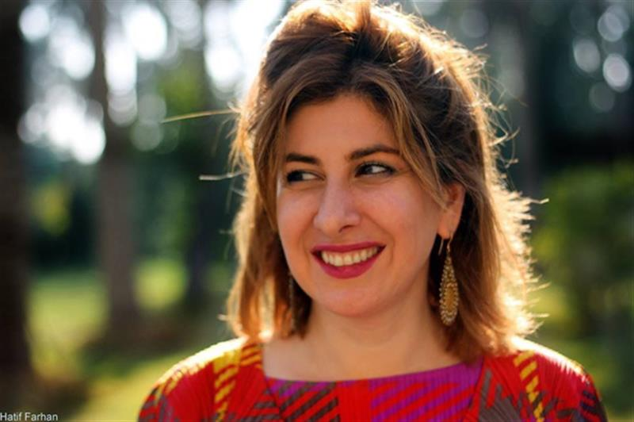
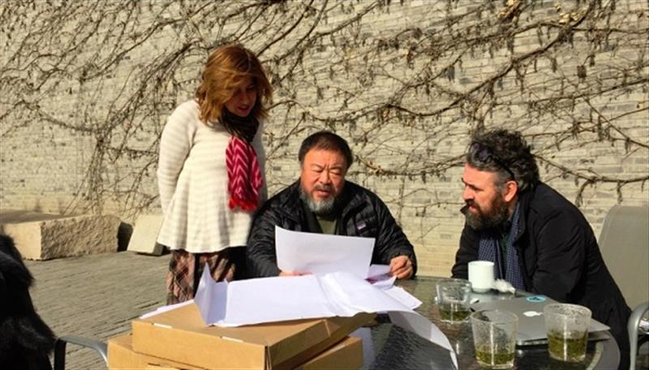

Francis Alÿs to work with refugees in Iraq and meet Isil’s victims
The artist Francis Alÿs will stage workshops at an Iraqi refugee camp as part of the project Creativity for Survival: Art Workshops in Refugee Camps in Iraq.
Alÿs’ activities, to start next year, will be in support of the Ruya Foundation, whose work is also supported by Chinese artist Ai Weiwei. The foundation is setting up a permanent art space in Camp Shariya in northern Iraq, which will facilitate adult refugees engaging in art through a program of talks, classes, and workshops led by a range of local and international artists including Alÿs, whose work has dealt with spatial justice and land-based poetics.
The idea behind the program is to provide art therapy for those in the camp to assist them in emotionally dealing with their situation, and potentially draw attention to the plight of those in the camp with artistic talent.
Tamara Chalabi, chair and co-founder of the foundation, told artnet News that the project is taking place in northern Iraq because “those communities are among the worst affected by ISIS, and have experienced first hand persecution at the hands of ISIS and lost their homes. They were made to leave.”
“I think that addressing their experience through creative means is as important as material well-being. It allows them a space through which to express their pain and their reality,” she explained.

Ruya Foundation co-founder, Tamara Chalabi.
Photo: Courtesy Ruya Foundation
Camp Shariya is home to over 19,000 Yazidi inhabitants and is the largest camp in the Dohuk area. The Yazidis are a Kurdish speaking religious minority in Iraq, and have been subject to ethnic cleansing bordering on genocide by ISIS.

Ai Weiwei and Tamara Chalabi look at images for 2015’s Traces of Survival.
Photo: Courtesy of Ruya Foundation.
Creativity for Survivalfollows in the footsteps ofa 2015 project which saw Ai select 500 drawings by made refugees in workshops held in Camp Shariya, Camp Baharka, and Mar Elia Camp, which were then published in book called Traces of Survival: Drawings by refugees in Iraq selected by Ai Weiwei. The drawings were also shown at the Iraq Pavilion at this years’ Venice Biennale.
ISIS have been routinely destroying historical sites and artifacts in Iraq and their other strongholds in Syria and Creativity for Survival is seeking to shine a light on the art that is being currently produced in Iraq.
SOURCE: Artnet News